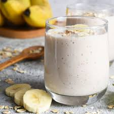

batido energético
un licuado cremoso con carbohidratos y antioxidantes para arrancar el día con energía o recuperar después de entrenar.
5 minutos
1 porción grande
rápida

ingredientes
- 1 banana madura
- 1 taza de frutos rojos congelados
- 2 cucharadas de avena instantánea
- 200 ml de leche vegetal o descremada
- 1 cucharadita de miel o edulcorante (opcional)
- hielo a gusto
paso a paso
- 1. colocá todos los ingredientes en la licuadora.
- 2. licuá a velocidad alta durante 45 segundos hasta lograr una textura cremosa.
- 3. ajustá el dulzor con miel o edulcorante si lo preferís.
- 4. serví inmediatamente y decorá con semillas o frutos enteros.